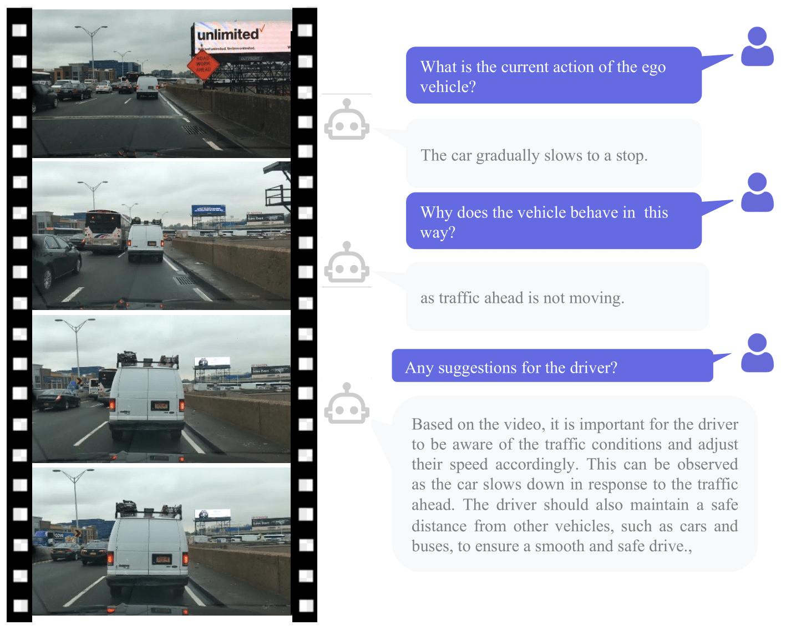
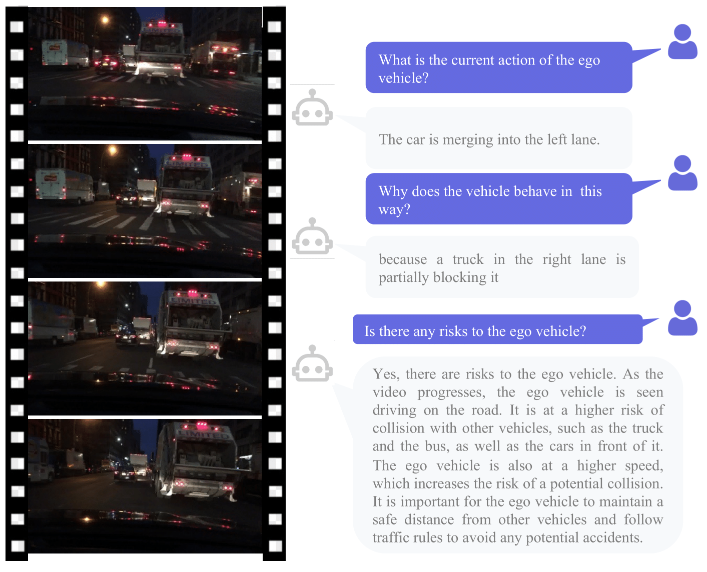

Demo Video
Abstract
Multimodal large language models (MLLMs) have emerged as a prominent area of interest within the research community, given their proficiency in handling and reasoning with non-textual data, including images and videos. This study seeks to extend the application of MLLMs to the realm of autonomous driving by introducing DriveGPT4, a novel interpretable end-to-end autonomous driving system based on LLMs. Capable of processing multi-frame video inputs and textual queries, DriveGPT4 facilitates the interpretation of vehicle actions, offers pertinent reasoning, and effectively addresses a diverse range of questions posed by users. Furthermore, DriveGPT4 predicts low-level vehicle control signals in an end-to-end fashion. These advanced capabilities are achieved through the utilization of a bespoke visual instruction tuning dataset, specifically tailored for autonomous driving applications, in conjunction with a mix-finetuning training strategy. DriveGPT4 represents the pioneering effort to leverage LLMs for the development of an interpretable end-to-end autonomous driving solution. Evaluations conducted on the BDD-X dataset showcase the superior qualitative and quantitative performance of DriveGPT4. Additionally, the fine-tuning of domain-specific data enables DriveGPT4 to yield close or even improved results in terms of autonomous driving grounding when contrasted with GPT4-V. The code and dataset will be publicly available.
Demo Figures
We provide some demos for DriveGPT4 generated conversations.
BDD-X testing set:


NuScenes validation set:


Video games:

Additional results on the BDD-X testing set:
 


Contact
For any questions, please send email to zhxuv at hku dot hk。
Citation
@article{xu2023drivegpt4,
title={DriveGPT4: Interpretable End-to-end Autonomous Driving via Large Language Model},
author={Xu, Zhenhua and Zhang, Yujia and Xie, Enze and Zhao, Zhen and Guo, Yong and Wong, Kenneth KY and Li, Zhenguo and Zhao, Hengshuang},
journal={arXiv preprint arXiv:2310.01412},
year={2023}
}